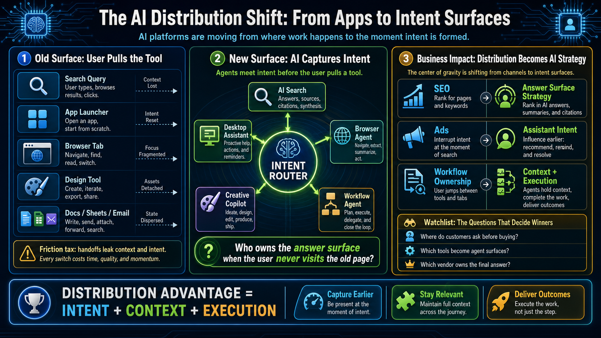
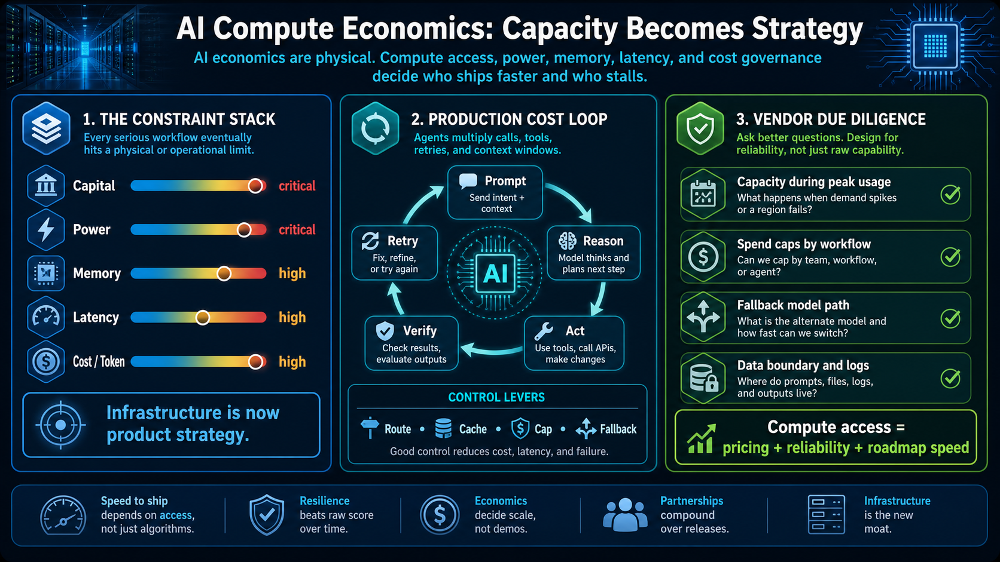

Model Routing: Stop Asking for One Best Model
The model market is splitting into specialized lanes: coding, realtime voice, open and efficient models, image/media, and science-oriented systems.
Model Routing Map
cost + privacy + latency + quality
Create a routing layer that chooses model class by task, sensitivity, latency, and price.
Keep a small regression set for each workflow instead of relying on public benchmarks.
Use frontier models for planning and hard reasoning; use cheaper models for extraction, formatting, and classification.
Agent Architecture: Workflow First, Memory Later
Agents are becoming execution surfaces across files, folders, tools, browsers, documents, code, and workflows.
Agent Workflow Architecture
Define the job as input -> allowed actions -> output artifact -> review gate.
Use explicit files, tickets, docs, and run logs as durable state before relying on generic memory.
Separate read, draft, edit, publish, spend, and external-send permissions.
Platform Integrations: AI Is Moving to the Point of Work
AI is being embedded where users already work, search, design, and decide.

Map where users currently ask, search, copy/paste, summarize, or hand work across systems.
Prioritize extensions, APIs, and embedded actions inside existing work surfaces.
Track answer quality, task completion, conversion, and handoff reduction.
Compute Ops: Capacity Is Now an Architecture Constraint
Compute, memory, power, cooling, data centers, and strategic access to capacity are becoming business constraints.

Define fallback behavior for rate limits, vendor degradation, or budget caps.
Document where prompts, files, logs, and derived outputs can be stored.
Report cost per workflow, not just total AI subscription spend.
Vendor Risk: Governance, Ads, and Compute Deals Matter
Founder fights, lawsuits, surprise alliances, and platform politics reveal who controls compute, distribution, governance, and customer trust.
Vendor Risk Decoder
Track ownership structure, litigation risk, and enterprise data commitments for critical AI vendors.
Watch whether ads or sponsored answers change user trust in assistant surfaces.
Map which vendors depend on which clouds, chips, compute partners, and distribution channels.